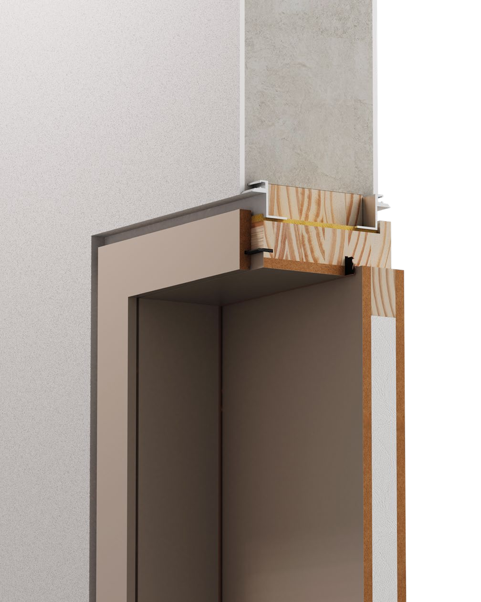
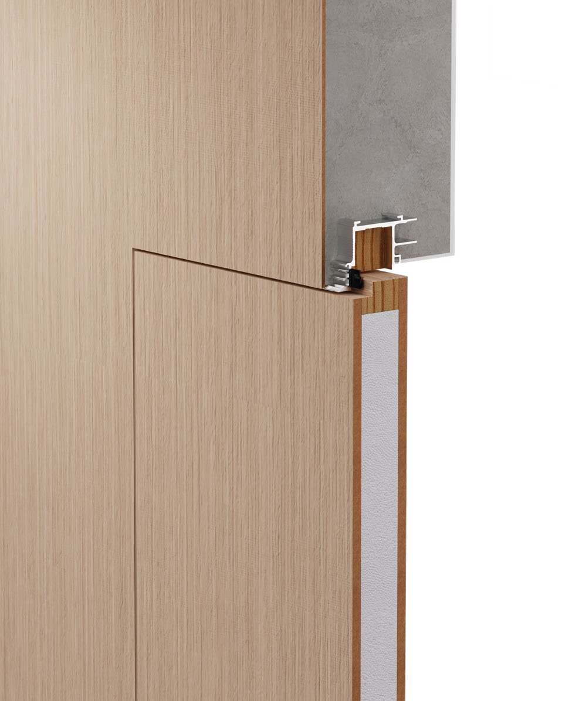
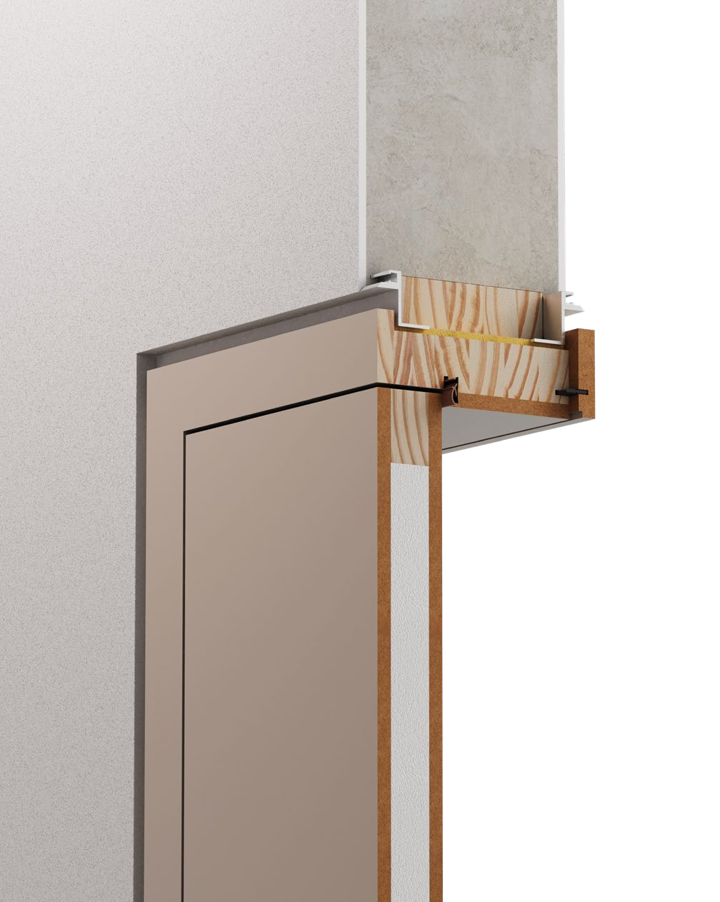
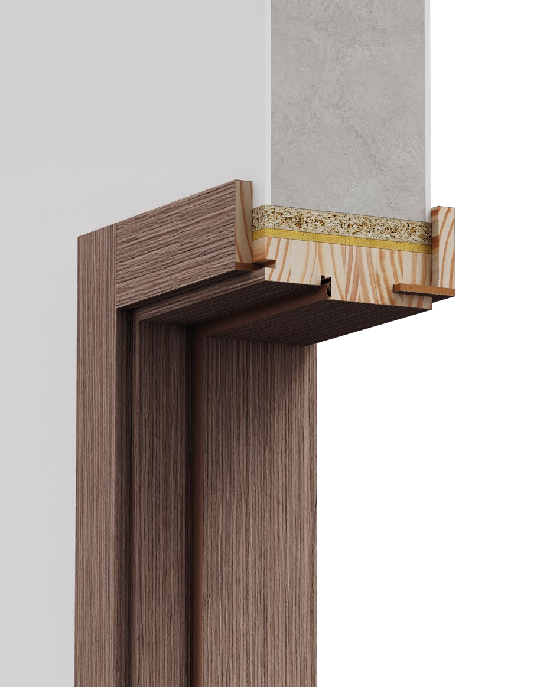

Hoja
La pieza móvil de la puerta. Su ancho y alto no son iguales al espacio de paso.
La forma de resolver el marco cambia la presencia de la puerta y las medidas que necesita la obra.
La pieza móvil de la puerta. Su ancho y alto no son iguales al espacio de paso.
La dimensión de paso indicada en el esquema técnico del sistema.
El vano de obra necesario para alojar el conjunto de puerta y marco.

Un encuentro con buña y resolución a filo interior.
| Paso | Hoja | Libre |
|---|---|---|
| 610 | 624 | 794 |
| 710 | 724 | 894 |
| 810 | 824 | 994 |
| 910 | 924 | 1094 |
| Paso | Hoja | Libre |
|---|---|---|
| 2020 | 2019 | 2112 |
| 2220 | 2219 | 2312 |
| 2420 | 2419 | 2512 |
| 2620 | 2619 | 2712 |
Libre: abertura libre de mampostería. Estas medidas corresponden a una hoja y a este sistema. Para dos hojas, alturas especiales y condiciones de instalación, consultá la ficha completa.
Consultá la compatibilidad con la línea y terminación elegidas.

La integración de la hoja con el plano del muro.
| Paso | Hoja | Libre |
|---|---|---|
| 610 | 628 | 744 |
| 710 | 728 | 844 |
| 810 | 828 | 944 |
| 910 | 928 | 1044 |
| Paso | Hoja | Libre |
|---|---|---|
| 2020 | 2024 | 2087 |
| 2220 | 2224 | 2287 |
| 2420 | 2424 | 2487 |
| 2620 | 2624 | 2687 |
Libre: abertura libre de mampostería. Estas medidas corresponden a una hoja y a este sistema. Para dos hojas, alturas especiales y condiciones de instalación, consultá la ficha completa.
Consultá la compatibilidad con la línea y terminación elegidas.

Un encuentro con buña y resolución a filo exterior.
| Paso | Hoja | Libre |
|---|---|---|
| 610 | 624 | 794 |
| 710 | 724 | 894 |
| 810 | 824 | 994 |
| 910 | 924 | 1094 |
| Paso | Hoja | Libre |
|---|---|---|
| 2020 | 2019 | 2112 |
| 2220 | 2219 | 2312 |
| 2420 | 2419 | 2512 |
| 2620 | 2619 | 2712 |
Libre: abertura libre de mampostería. Estas medidas corresponden a una hoja y a este sistema. Para dos hojas, alturas especiales y condiciones de instalación, consultá la ficha completa.
Consultá la compatibilidad con la línea y terminación elegidas.

Una terminación con contramarco telescópico, con opciones lisas o molduradas.
Contramarcos regulables para tabiques de 100–120, 150–170 y 200–220 mm, según el ancho de marco elegido.
| Paso | Hoja | Libre Con premarco | Libre Sin premarco |
|---|---|---|---|
| 610 | 624 | 754 | 718 |
| 710 | 724 | 854 | 818 |
| 810 | 824 | 954 | 918 |
| 910 | 924 | 1054 | 1018 |
| Paso | Hoja | Libre Con premarco | Libre Sin premarco |
|---|---|---|---|
| 2020 | 2019 | 2092 | 2074 |
| 2220 | 2219 | 2292 | 2274 |
| 2420 | 2419 | 2492 | 2474 |
| 2620 | 2619 | 2692 | 2674 |
Libre: abertura libre de mampostería. Estas medidas corresponden a una hoja y a este sistema. Para dos hojas, alturas especiales y condiciones de instalación, consultá la ficha completa.
Consultá la compatibilidad con la línea y terminación elegidas.